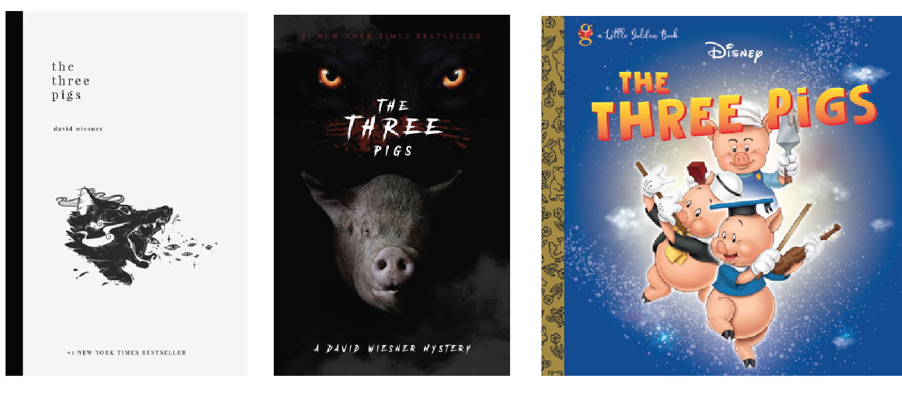

Project Brief: Re-design an existing book for 3 different audiences. Solo Project. 4 weeks.
The Three Pigs: The Three Little Pigs is a story about three pigs who build three houses of different materials. The Big Bad Wolf blows down the first two pigs' houses, made of straw and sticks respectively, but is unable to destroy the third pig's house, made of bricks.
Poetry: Poetry book covers are very abstract and clean. These covers are more calming and have fewer elements going on at the same time. Line illustrations are often used to express the contents of the book. Handdrawn illustrations give more room for interpretation which reflects how poetry and literature also have room for more exploration. Poetry books are usually softcover and fairly standard in size. These books are all either 5” x 8”, 5.5” x 8.5” or 6” x 9”.
Thriller:Through research, I noticed that most mystery and thriller books are dim and based on a dark colour palette. The covers usually do not give off too much and reveals only a glimpse of the characters; or none at all. The eerie feeling of the cover is usually achieved by the smoke or fog in illustrations or photographs. A majority of this genre goes into fiction, and from my observation, these are also usually softcover and fall under similar sizes as fiction books.
Children’s book covers are very lively and playful with bright colours and fun fonts. While photography is generally not used in children’s book covers, eye-catching illustrations dominate. The title of the book is also usually very prominent on the cover. Children’s books are usually hardcovers that have decorative spines. The hardcover protects the book from any tearing or stains. More texture can also be applied to the cover if it is hard (glitter, embossing, debossing, etc.). The sizing of this book is larger and closer to a square than a rectangle. Many children’s books I have observed are larger and provides more grip areas for their smaller hands. A bigger book also allows for more detailed and larger illustrations.
Cover 1: The design rationale behind this poetry book was targeted to an audience with a more aesthetic and artsy background. The book is softcover as it helps resonate a gentle and soft vibe. I chose an off-white background colour rather than pure white as it was easier on the eyes with muted tones. The title and author are also typed in lowercase, which reflects back to a softer and calmer theme. The contradiction of the roaring wolf gives it contrast and focuses the attention to this illustration. I chose this wolf because the clouds on the left can also be interpreted as the wind (or the blowing of the pigs’ houses down). Illustrations of the pigs are not shown in the cover as I wanted the cover to be more abstract while veering away from giving the reader everything right off the bat.
Cover 2: The covers of theses books do not show everything, hence the pig in the dark and the ominous wolf eyes. The wolf’s full head and body are not present on the cover. Book covers usually do not reveal the villain’s full face. Choosing to make the eyes bigger rather than smaller in perspective gives the wolf a more powerful stance over the pig. The title text I used is white instead of blood-red because I wanted to include a bloody claw scratch to subtly represent drawn blood (or death). The recognition of the book being a New York Times Bestseller is not as prominent on the cover as most books. This recognition is usually placed on the top of the cover, but I did not want the text to break the intensity of the wolf’s glare. To solve this, I made the colour vibrancy lower and though it becomes harder to read, the eye-catching element of this book is the intensity the cover gives off and not because of the award.
Cover 3: I wanted to design a Children’s book that was in a Disney collection.The author of the book is not noted onto the cover as the author is presumed and advertised to be just Disney the company itself. Colourful and cartoon-like characters are used on the cover to attract younger audiences and big fonts are used for the title. The spine and the logo on the top left would be used on all the books in this collection. The spine will be glossy and sparkly while the fairy stardust behind the pigs will be slightly embossed at some points. The wolf is not on the cover as through research, children’s books do not usually include the villain even if there is one. The exclusion of the villain keeps the cover from looking scary and negative. This book is squared shaped size as this provides more area for the children to hold with their smaller hands. The book would be hardcover which will prevent any tearing or staining. This also allows for the cover to be shiny and embossed as children are intrigued by texture.